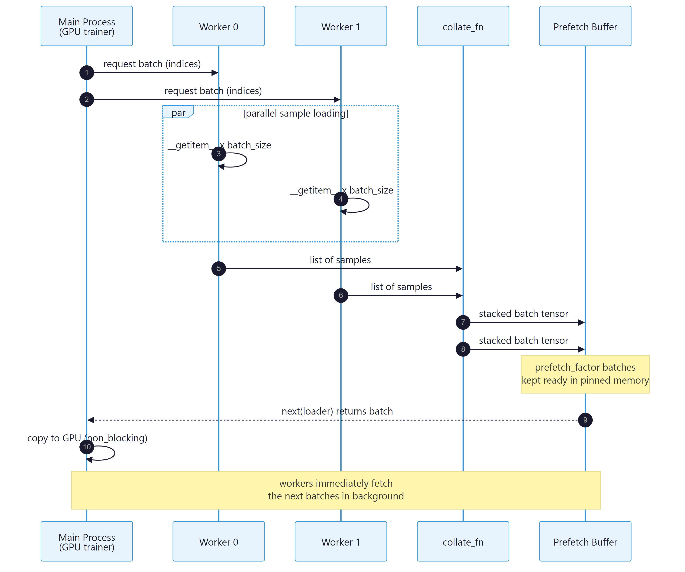

A modern GPU can devour tens of thousands of samples per second. Whether the training loop actually achieves that throughput depends almost entirely on the data pipeline. PyTorch ships a two-class abstraction that handles this cleanly: a Dataset owns on-disk format and per-sample loading, and a DataLoader wraps the dataset to provide shuffling, batching, and parallel prefetching. This section covers both classes plus the supporting cast of samplers, collate functions, and streaming-data tools.
Map-Style Datasets
The most common dataset type is the map-style dataset: a class that implements __len__ (so len(ds) works) and __getitem__(idx) (so ds[i] works). Indices are integers in the range [0, len(ds)), and the return value is whatever the model expects per sample, conventionally a tuple (features, label).
import torch
from torch.utils.data import Dataset
class ToyDataset(Dataset):
def __init__(self, X, y):
self.features = X
self.labels = y
def __len__(self):
return self.labels.shape[0]
def __getitem__(self, index):
return self.features[index], self.labels[index]
X = torch.tensor([[-1.2, 3.1], [-0.9, 2.9], [-0.5, 2.6],
[ 2.3, -1.1], [ 2.7, -1.5]])
y = torch.tensor([0, 0, 0, 1, 1])
ds = ToyDataset(X, y)
print(len(ds), ds[0])
__init__, __len__, __getitem__) are the entire required interface.The real work usually lives inside __getitem__: read an image from disk, decode it, apply transforms, tokenize text, or build features. PyTorch's design philosophy is that this per-sample work happens lazily on demand, so a dataset can represent terabytes of disk-resident data without using any RAM at construction time. The torchvision.datasets and datasets (Hugging Face) libraries provide ready-made map-style datasets for common public corpora.
IterableDataset for Streaming
IterableDataset is the alternative type for data that cannot be indexed cheaply: a network stream, a generator, a log file being tailed. The interface is a single method __iter__ that yields samples one at a time. Iterable datasets do not have a length and cannot be shuffled by the DataLoader; any necessary shuffling has to happen inside __iter__ (typically by reading into a small buffer and shuffling that).
The subtle gotcha is that iterable datasets need extra care under multi-worker DataLoaders. Each worker process gets its own copy of the dataset and would, by default, iterate the entire stream. The fix is to call torch.utils.data.get_worker_info() inside __iter__ and shard the stream by worker id, so worker 0 gets every nth sample starting at 0, worker 1 starts at 1, and so on. The webdataset library (covered below) handles this sharding automatically.
The DataLoader

Figure E.4.1: The DataLoader pipeline runs worker fetch, collate, and prefetch in parallel with the GPU step so the next batch is ready before the current one finishes.
DataLoader wraps any dataset and produces an iterator of batches. The constructor takes the dataset and a battery of keyword arguments that control how batches are assembled and delivered. Knowing what each argument does and when to change it from its default is the difference between a CPU-bound training loop and a GPU-saturated one.
from torch.utils.data import DataLoader
train_loader = DataLoader(
dataset=ds,
batch_size=64,
shuffle=True, # randomize order each epoch
num_workers=4, # background processes for fetch/decode
pin_memory=True, # speeds up host -> GPU transfer
persistent_workers=True, # keep worker processes alive across epochs
prefetch_factor=2, # batches each worker pre-loads
drop_last=True, # drop the incomplete trailing batch
)
for features, labels in train_loader:
# features, labels are tensors of shape (batch_size, ...)
...
batch_size- Number of samples per batch. Choose to fit comfortably in GPU memory; profile with smaller values first if uncertain.
shuffle- Randomize order each epoch (training only; off for validation and test).
num_workers- Number of background processes that call
__getitem__in parallel. A common starting point is the number of CPU cores divided by the number of GPUs on the host. Set to 0 (the default) only for trivially small datasets where worker startup overhead dominates. pin_memory- Allocate batches in page-locked host memory so transfer to the GPU is faster and can overlap with compute. Always set to
Truewhen training on GPU. persistent_workers- Keep the worker processes alive between epochs instead of respawning them. Substantial speedup for short epochs.
prefetch_factor- How many batches each worker prepares ahead of demand. The default of 2 is fine for most workloads; increase if the GPU stalls waiting for data.
drop_last- Drop the final incomplete batch. Setting this to
Truekeeps the per-batch statistics constant, which matters for batch norm and for gradient noise that depends on batch size.
Multi-process workers use the spawn start method on Windows, which re-imports the main script in each worker. Any code that runs at module level (training launch, model construction, file writes) will execute once per worker, causing duplicate work and sometimes deadlocks. The fix is the standard Python guard: wrap the training launch in if __name__ == "__main__":. In Jupyter notebooks, multi-worker loaders sometimes hang because the inter-process queues do not survive cell re-execution; restart the kernel before retrying, or set num_workers=0 and accept the slowdown during interactive development.
collate_fn: Custom Batch Assembly
The DataLoader's default behavior is to stack a list of per-sample tuples into a tuple of batched tensors: a list of (tensor_of_shape_X, label) becomes (tensor_of_shape_(B, *X), tensor_of_shape_(B,)). This works when every sample has the same shape. For variable-length data (NLP sequences, audio clips, point clouds), the per-sample shapes differ and the default collate raises an error. The fix is a custom collate_fn that knows how to pad or pack the variable-length axis.
import torch
from torch.nn.utils.rnn import pad_sequence
from torch.utils.data import DataLoader
def collate_pad(batch):
"""Pad variable-length sequences to the max length in the batch."""
seqs, labels = zip(*batch)
lengths = torch.tensor([len(s) for s in seqs])
padded = pad_sequence(seqs, batch_first=True, padding_value=0)
return padded, lengths, torch.stack(labels)
# Each sample is a (variable-length tensor, scalar label).
samples = [(torch.arange(n + 3), torch.tensor(n % 2)) for n in range(8)]
loader = DataLoader(samples, batch_size=4, collate_fn=collate_pad)
padded, lengths, labels = next(iter(loader))
print(padded.shape, lengths, labels)
collate_fn for variable-length sequences. The function receives a list of per-sample tuples and returns the batched tensors of choice.Samplers
Under the hood, the DataLoader gets indices from a Sampler. The default sampler is SequentialSampler when shuffle=False and RandomSampler when shuffle=True. Three specialized samplers are worth knowing:
WeightedRandomSampler(weights, num_samples): draws indices with probability proportional to the supplied weights. Used to oversample rare classes or hard examples without modifying the dataset.SubsetRandomSampler(indices): shuffles a fixed subset of indices. Useful for cross-validation folds or for training on a curated slice.DistributedSampler(dataset, num_replicas, rank): shards indices across distributed-training workers so each rank sees a disjoint slice of the data. Mandatory for DistributedDataParallel training; the partner callsampler.set_epoch(epoch)must be made every epoch so the random shuffle differs across epochs.
With a 95/5 binary label imbalance, the model may learn to predict the majority class almost exclusively. Without changing the dataset, build per-sample weights inversely proportional to class frequency (rare class gets weight 19, majority class weight 1), pass them to WeightedRandomSampler with num_samples=len(dataset) and replacement=True, and the DataLoader will deliver roughly balanced batches. Combine with shuffle=False in the DataLoader (the sampler already handles randomization). Cross-reference: Chapter 6 discusses related curriculum-style data weighting at pretraining scale.
For any dataset that already lives on the Hub, do not write a custom Dataset class. load_dataset returns a memory-mapped Arrow-backed object that supports streaming, mapping, filtering, and direct PyTorch-tensor return. The .with_format("torch") call turns it into a drop-in DataLoader source.
from datasets import load_dataset
from torch.utils.data import DataLoader
ds = load_dataset("imdb", split="train").with_format("torch")
loader = DataLoader(ds, batch_size=32, shuffle=True, num_workers=4,
pin_memory=True)
Large-Scale Streaming: webdataset
Once datasets cross the multi-terabyte threshold (think LAION, RedPajama, or any web-scale image-text corpus), the map-style pattern stops working. Random access becomes I/O-bound, file-system metadata costs dominate, and decompression of individual files is wasteful. The webdataset library packages samples as POSIX tar shards (each containing tens of thousands of samples) and streams them sequentially, which is dramatically faster on local disks, network filesystems, and cloud object storage.
A webdataset.WebDataset object exposes an IterableDataset that yields samples from one shard at a time. Transformations are chained via a fluent API: WebDataset(urls).decode("pil").to_tuple("jpg", "json").map_tuple(preprocess, identity). Sharding across DataLoader workers is automatic; sharding across distributed-training ranks requires passing the rank and world size to a wrapper. For datasets up to a few hundred gigabytes the map-style pattern is fine; beyond that, webdataset (or a similar sharded streaming library) becomes essential.
An iterable dataset has no canonical "end of epoch." It is whatever the iterator decides to stop emitting. For training loops that expect a fixed number of steps per epoch, set the total number of steps explicitly and break out of the inner loop when reached, rather than relying on the iterator to terminate. For evaluation, structure the iterable dataset to emit a known finite slice (one shard, one validation file) so the validation loop can run to completion deterministically.
The data pipeline splits cleanly into two responsibilities: the Dataset knows how to load one sample, and the DataLoader knows how to assemble many samples into batches and deliver them in parallel. Most performance problems trace back to num_workers being too low, pin_memory being off, or a per-sample preprocessing step that should have been moved to the GPU. For variable-length data, write a custom collate_fn; for imbalanced data, use WeightedRandomSampler; for distributed training, use DistributedSampler with set_epoch; for web-scale data, switch to webdataset or a similar sharded streaming library.
Objective. Write a custom collate_fn for ragged tensors, the single most common interview question for ML engineers.
Task. Build a Dataset that yields 1000 sequences with lengths drawn uniformly from [10, 100] and integer token ids in [0, 32000). Write collate_fn(batch) that returns a dict with: input_ids of shape (B, T_max) right-padded with token 0, attention_mask of shape (B, T_max), and lengths of shape (B,). Use torch.nn.utils.rnn.pad_sequence to confirm your output. Run with num_workers=4 and verify on three batches.
Stretch. Add bucket-sampling: group sequences within 10 percent of each other in length to minimize padding waste. Measure the average T_max per batch with and without bucketing.
Objective. Diagnose the most common training-throughput problem: a starved GPU.
Task. Build a synthetic Dataset whose __getitem__ calls time.sleep(0.01) to simulate a slow per-sample transform. Wrap a 1000-sample run with a simple timer for num_workers in [0, 2, 4, 8], each with batch_size=32 and pin_memory=True. Tabulate samples per second. Then add prefetch_factor=4 and re-measure.
Expected outcome. Throughput should scale near-linearly up to the CPU core count, then plateau. The plateau is the data-pipeline ceiling; if your GPU can consume faster than that, the GPU is starved and you need more workers or simpler per-sample work.
Further Reading
Official Documentation
Dataset, IterableDataset, DataLoader, and every built-in sampler.